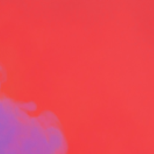

The interior depicted is the Café de la Gare, 30 Place Lamartine, run by Joseph Ginoux and his wife Marie, who in November 1888 posed for Van Gogh's and Gauguin's Arlésienne; a bit later, Joseph Ginoux evidently posed for both artists.

he Night Café (French: Le Café de nuit) is an oil painting created by Dutch artist Vincent van Gogh in September 1888 in Arles.[1] Its title is inscribed lower right beneath the signature. The painting is owned by Yale University and is currently held at the Yale University Art Gallery in New Haven, Connecticut.